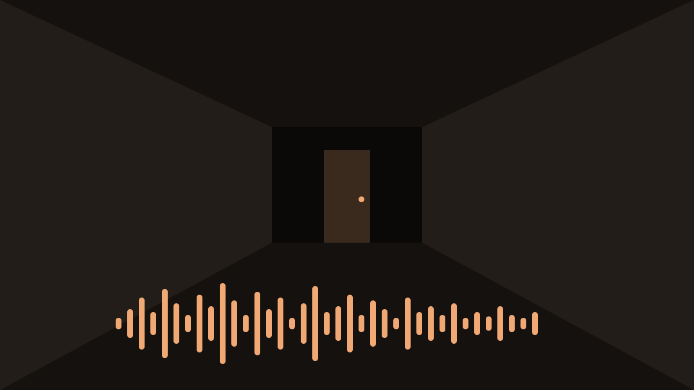

Tulisan
Belajar dari Dua Film: Horor dan Plot Penuh Kejutan
Dead-End Job adalah proyek deskripsi audio pertama saya untuk film bergenre horor. Saya belajar banyak dari pengalaman ini, terutama tentang cara memanfaatkan musik, efek suara, dan bunyi penting lainnya agar suasana tetap mencekam walaupun ada narasi deskripsi.

Deskripsi gambarLorong gelap yang menyempit ke sebuah pintu cokelat di ujungnya. Di bagian bawah, gelombang suara berwarna jingga naik turun.
Kapan Harus Diam
Dalam film horor, keheningan adalah bagian dari cerita. Deskripsi yang terlalu padat justru dapat merusak ketegangan. Karena itu, saya memilih momen yang tepat: kapan menjelaskan, dan kapan membiarkan penonton mendengar langkah kaki atau derit pintu.
Plot yang Tidak Biasa
Pelajaran berikutnya datang dari Collision Course. Alurnya tidak biasa dan penuh kejutan dari awal sampai akhir. Saya sempat kesulitan memahami pesan yang ingin disampaikan sutradara, lalu berusaha sebaik mungkin menyampaikan pesan itu melalui deskripsi audio.
Untuk teman-teman tunanetra pencinta film: apakah Anda dapat mengikuti dan menikmati ceritanya? Apakah deskripsi audio saya membantu? Saya ingin sekali mendengar pendapat Anda.
Terima kasih kepada Iyuno yang telah memercayakan kedua judul ini kepada saya. Saya juga terkejut ketika keduanya masuk daftar Top 10 Netflix Indonesia: Dead-End Job di peringkat pertama dan Collision Course di peringkat kedelapan.